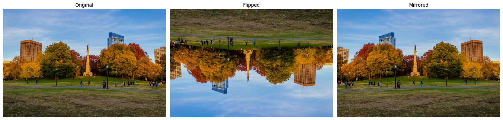

OpenCV Crash Course with Python
A hands-on guide to computer vision using OpenCV in Python. I cover the core image and video processing functions available in OpenCV, with plenty of working code examples.
At the start of my PhD, I did a bit of Python tutoring for undergrads. Over Easter break, while cleaning out my computer, I stumbled across some old Jupyter notebooks I’d put together for those sessions, covering basic Python, object-oriented programming, and some hands-on work with the OpenCV library. I was about to delete them, but figured, why not turn them into something useful?
So here we are. This post is a walkthrough of my introductory OpenCV crash course. I’ll show you how to read and display media, apply basic transformations, and a few other simple things. If you want to follow along the blog you can download the code and resources here.
Installing OpenCV
The first thing we need to do is install OpenCV and all the libraries we will use in this course. As always, I recommend creating a new environment first and installing everything inside it. Use the following commands to install the packages:
uv venv envOpenCV
source envOpenCV/bin/activate
uv pip install notebook opencv-python matplotlib
If you are not familiar with uv or don’t use it, you can install the packages with this instead:
python -m venv envOpenCV
source envOpenCV/bin/activate
pip install notebook opencv-python matplotlib
If you plan to dive deeper into the OpenCV library, it might be worth installing opencv-contrib-python instead, which includes extra features.
Reading and Displaying Images
Let’s start by loading an image from disk and displaying it. OpenCV comes with a simple imread() function that takes a path and loads the image as a NumPy array.
import cv2 as cv
import numpy as np
from matplotlib import pyplot as plt
cat = cv.imread('Resources/Photos/cat.jpg')
Once loaded, you can display the image using OpenCV’s window system:
cv.imshow('Cat', cat)
cv.waitKey(0)
cv.destroyAllWindows()
The waitKey(0) call keeps the image open until any key is pressed and cv.destroyAllWindows() closes the windows afterwards.
If you prefer (as me) to use matplotlib to display the image, you first need to transform the image from BGR to RGB, because OpenCV loads them in BGR and matplotlib expects it in RGB. Here we display both RGB and BGR to show this.
rgb_cat = cv.cvtColor(cat, cv.COLOR_BGR2RGB)
plt.figure(figsize=(6, 4))
plt.subplot(1, 2, 1)
plt.imshow(rgb_cat)
plt.subplot(1, 2, 2)
plt.imshow(cat)
plt.show()
Another thing to keep in mind: when you open large images in OpenCV, they won’t automatically resize to fit your screen. In contrast, Matplotlib does scale the image to fit the figure size when you use plt.imshow(), but this is just for display purposes. The image itself doesn’t change (you can confirm this by checking the axes, which reflect the original size).
cat_large = cv.imread('Resources/Photos/cat_large.jpg')
rgb_cat_large = cv.cvtColor(cat_large, cv.COLOR_BGR2RGB) # You could also use this function to change it to black and white
plt.figure(figsize=(8, 4))
plt.subplot(1, 2, 1)
plt.title('Small')
plt.imshow(rgb_cat)
plt.subplot(1, 2, 2)
plt.title('Large')
plt.imshow(rgb_cat_large)
plt.show()
Reading and Displaying Video
To read video, use OpenCV’s VideoCapture object:
capture = cv.VideoCapture('Resources/Videos/dog.mp4')
# Check if the video opened successfully
if not capture.isOpened():
print("Error: Could not open video.")
# Read the frames per second
fps = round(capture.get(cv.CAP_PROP_FPS))
We loop through the video frame by frame using .read(). This function returns two values: the frame itself and a boolean that tells us whether the frame was successfully read (e.g., it will return False if we’ve reached the end of the video, the file didn’t load correctly, or the camera got disconnected).
To control the playback speed, we use cv.waitKey(), which waits for a key press for int(1000/fps) milliseconds — enough to match the video’s original frame rate. It returns the ASCII value of the key pressed, or -1 if no key was pressed during that time. If the key is 'q', we break the loop and stop the video.
while True:
ret, frame = capture.read()
if not ret:
break # End of video
# Display frame as an image
cv.imshow('Video Frame', frame)
# Press 'q' to quit
if cv.waitKey(int(1000/fps)) & 0xFF == ord('q'):
break
# Release resources
capture.release()
cv.destroyAllWindows()
Similarly, we can pull in video from a webcam:
capture = cv.VideoCapture(0)
while True:
ret, frame = capture.read()
if not ret:
break
cv.imshow('Webcam', frame)
if cv.waitKey(20) & 0xFF == ord('q'):
break
capture.release()
cv.destroyAllWindows()
Rescaling Images/Frames
Sometimes you need to resize your image or video is way too big. Here’s how to rescale it.
def rescaleImage(img, scale=0.5):
new_dimensions = (
int(img.shape[1]*scale),
int(img.shape[0]*scale)
)
return cv.resize(img, new_dimensions, interpolation = cv.INTER_AREA)
And use it like this:
rescaled_cat = rescaleImage(cat)
cv.imshow('Cat', rescaled_cat)
cv.waitKey(0)
cv.destroyAllWindows()
Keep in mind that we can use the same function for videos.
Drawing on Images
An image is essentially just a 3D array: width, height, and colour channels. As I mentioned before, in OpenCV, colours are ordered as BGR, while matplotlib uses RGB. To create a black image, we can simply use NumPy to generate an array filled with zeroes.
In the code we use the 8-bit unsigned integer (uint8) data type, which allows values from 0 to 255 for each colour. Other common data types include ‘uint16’ (with a range from 0 to 65535) and ‘float32’ (with values between 0.0 and 1.0).
black_img = np.zeros((500,500,3), dtype='uint8')
We can also manipulate the array values to change the colour of the image directly.
red_img = black_img.copy()
red_img[:] = (255, 0, 0) # Since we are displaying the images with matplotlib the first value corresponds to red
green_img = black_img.copy()
green_img[:] = (0,255,0)
blue_img = black_img.copy()
blue_img[:] = (0,0,255)
We can also create a rectangle (or any shape) only using numpy.
shapes_img = black_img.copy()
shapes_img[200:300,400:450] = (0,255,0)
But OpenCV has functions that do this in a simpler way. You can also add text
cv.rectangle(shapes_img,(380,50),(410,130),(0,255,0),3) # Green rectangle with thickness 3
cv.line(shapes_img,(380,50),(410,130),(255,0,0),5) # Red line with thickness 5
cv.circle(shapes_img,(120,300), 60, (0,0,255), cv.FILLED) # Blue filled circle
font = cv.FONT_HERSHEY_SIMPLEX
cv.putText(shapes_img,'Sample text',(25,475), font, 2,(255,255,255),2,cv.LINE_AA) # White text

Image Translation, Rotation, and Flipping
Using OpenCV, basic image transformations are straightforward to implement. Just keep in mind that some of these transformations can be destructive, that is, you might lose information from the original image in the process.
Translation (move)
img = cv.imread('Resources/Photos/park.jpg')
img = cv.cvtColor(img, cv.COLOR_BGR2RGB)
def translate(img, x, y):
transMat = np.float32([[1,0,x],[0,1,y]])
dimensions = (img.shape[1], img.shape[0])
return cv.warpAffine(img, transMat, dimensions)
translated = translate(img, -100, 100)
Rotation
def rotate(img, angle, rotPoint=None):
(height,width) = img.shape[:2]
if rotPoint is None:
rotPoint = (width//2,height//2)
rotMat = cv.getRotationMatrix2D(rotPoint, angle, 1.0)
dimensions = (width,height)
return cv.warpAffine(img, rotMat, dimensions)
rotated = rotate(img, -45)
rotated_rotated = rotate(rotated, -45)
Note that in the second rotation, some parts of the image are lost. If you would want to keep as much information as possible you could rotate the original image by -90 degrees instead of rotating the rotated image.

Flipping
Flipping an image in OpenCV is done with cv.flip(), where the second argument specifies the direction: 0 for vertical flip, 1 for horizontal, and -1 for both simultaneously.
flip = cv.flip(img, -1)
mirrored = cv.flip(img, 1)

Cropping
Since the image is an array we can also crop it as you would an array.
cropped = img[200:400, 300:400]
Converting Colour Spaces
As we have seen before, OpenCV loads images in the BGR colour space by default. However, in some cases, it’s useful to convert the image to a different colour space depending on what you’re trying to do. This can be done with the cv.cvtColor function.
cat = cv.imread('Resources/Photos/cat.jpg')
rgb = cv.cvtColor(cat, cv.COLOR_BGR2RGB)
gray = cv.cvtColor(cat, cv.COLOR_BGR2GRAY)
lab = cv.cvtColor(cat, cv.COLOR_BGR2LAB)

Smoothing and Blurring
Smoothing or blurring an image is a common preprocessing step in computer vision to reduce noise or detail. Most blurring functions in OpenCV work by applying a kernel — a small matrix that moves over the image and combines pixel values in a neighborhood. The size of the kernel (like (11,11)) defines how many surrounding pixels influence the result. Larger kernels produce stronger blurs but can also remove more detail. Different functions apply different strategies: simple averaging, Gaussian-weighted smoothing, median filtering, or edge-preserving bilateral filtering.
img = cv.imread('Resources/Photos/cats.jpg')
img = cv.cvtColor(img, cv.COLOR_BGR2RGB)
average = cv.blur(img, (11,11))
gauss = cv.GaussianBlur(img, (11,11), 0)
median = cv.medianBlur(img, 11)
bilateral = cv.bilateralFilter(img, 10, 35, 25)
Thresholding
Thresholding is a technique used in image processing to segment an image into different regions based on pixel intensity values. It is particularly useful in converting a grayscale image into a binary image. The image is divided into two classes: foreground and background. Thresholding helps to highlight objects or features of interest while discarding irrelevant information.
In simple thresholding, a fixed threshold value is chosen, and pixels in the image are classified as foreground or background based on their intensity value relative to this threshold.
img = cv.imread('Resources/Photos/cats.jpg')
gray = cv.cvtColor(img, cv.COLOR_BGR2GRAY)
# Simple Thresholding
threshold, thresh = cv.threshold(gray, 150, 255, cv.THRESH_BINARY )
threshold, thresh_inv = cv.threshold(gray, 150, 255, cv.THRESH_BINARY_INV )
Adaptive thresholding instead calculates a different threshold for each pixel based on its local neighborhood.
adaptive_thresh_mean = cv.adaptiveThreshold(gray, 255, cv.ADAPTIVE_THRESH_MEAN_C, cv.THRESH_BINARY, 201, 0)
adaptive_thresh_gauss = cv.adaptiveThreshold(gray, 255, cv.ADAPTIVE_THRESH_GAUSSIAN_C, cv.THRESH_BINARY, 201, 0)
Masking
The final thing that we will check is masking. The concept is simple, where a mask (a binary image) is used to isolate or highlight specific regions of interest in an image. In this case, we create a mask with shapes such as circles and rectangles and then combine them. By using bitwise operations, such as cv.bitwise_and(), we apply the mask to the original image, resulting in an image where only the masked areas are visible, and everything else is set to black (or transparent). This technique is often used in image segmentation, object detection, and background removal.
img = cv.imread('Resources/Photos/cats 2.jpg')
img = cv.cvtColor(img, cv.COLOR_BGR2RGB)
# Create blank mask
blank = np.zeros(img.shape[:2], dtype='uint8')
# Circle mask
circle = cv.circle(blank.copy(), (img.shape[1]//2 + 45, img.shape[0]//2), 100, 255, -1)
# Rectangle mask
rectangle = cv.rectangle(blank.copy(), (30, 30), (370, 370), 255, -1)
# Combine masks
weird_shape = cv.bitwise_and(circle, rectangle)
# Apply mask
masked = cv.bitwise_and(img, img, mask=weird_shape)
Conclusion
That’s pretty much everything I used to teach undergrads about OpenCV in Python. If you’re curious to explore a bit more, the Jupyter notebook includes an extra section on contour detection, but I decided to leave it out of the blog post to keep things from getting too long.